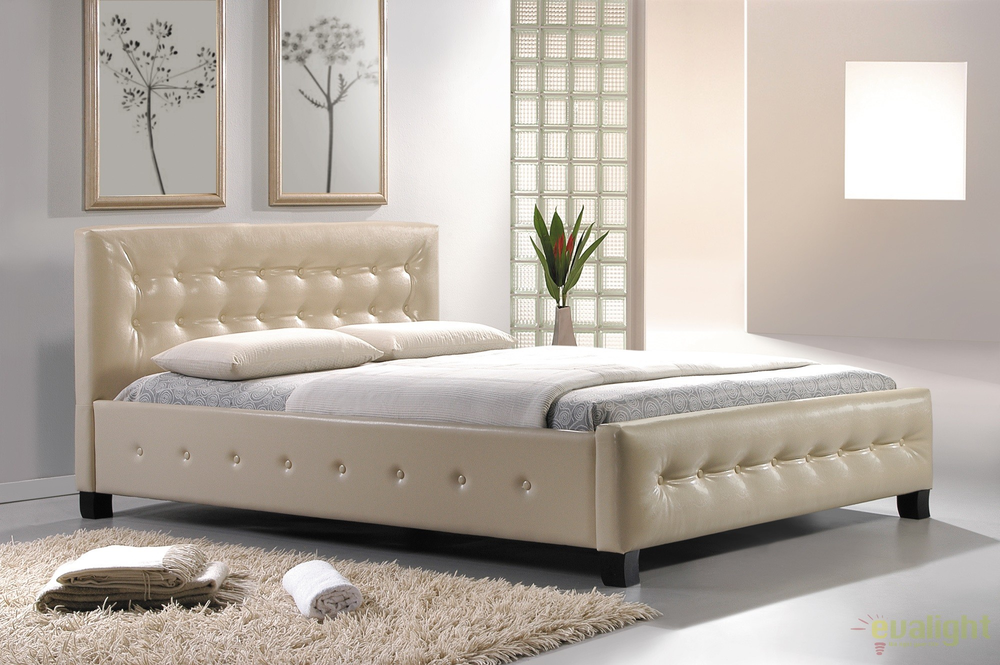
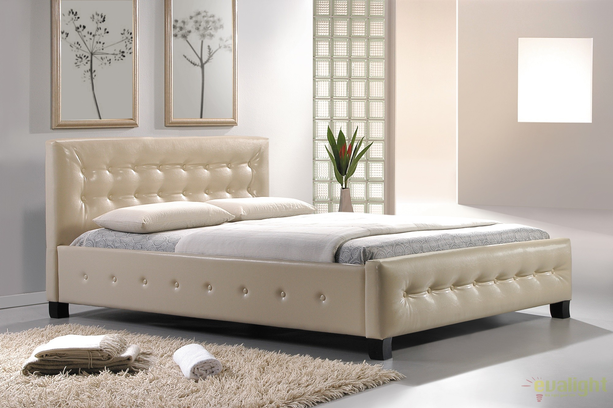

Paturi Dormitor - Tamos
2020.09.19 22:15

0745.171.717 Te sunam noi Info Center Luni - Vineri: 10.00 - 18.00 0373.303.020
Contact us menu 0 Cos Account Comenzi Listă de preferințe Autentificare Inregistrare Magazine Meniu Dormitor Dormitoare Complete Dormitoare usi clasice Dormitoare usi culisante Dormitoare paturi tapitate Dormitoare colt Dormitoare pont Dormitoare tineret Paturi Dormitor Paturi o persoana Paturi matrimoniale Paturi colt Paturi tapitate Comode si Noptiere Dormitoare ieftine Perne si pilote Lenjerii pat
Bucatarie Bucatarii Standard Bucatarii fara electrocasnice Bucatarii cu electrocasnice Bucatarie 1-ul PRET ! Bucatarii Modulare Corpuri - baza Corpuri - suspendate Corpuri - incastrabile Blaturi bucatarie Coltare bucatarie Coltare tapitate bucatarie Mese si scaune bucatarie Mese bucatarie Scaune bucatarie Picioare mese bucatarie Seturi masa cu scaune Electrocasnice Hote Chiuvete Plite Cuptoare Baterii Combine frigorifice Vezi mai multe
Depozitare Dulapuri usi clasice Dulapuri usi culisante Dressinguri usi clasice Dressinguri usi culisante Cuiere Pantofare
Canapele Canapele fixe Canapele extensibile Coltare fixe Coltare extensibile Fotolii Taburete si Lazi depozitare
Saltele Saltele Ortopedice Saltele Ortopedice Arcuri Saltele Ortopedice Spuma Saltele Superortopedice Saltele Superortopedice cu Arcuri Saltele Superortopedice cu Memory Somiere Topuri saltele Protectii saltea
Living Livinguri Biblioteci Mobila tineret
Birou Birouri PC Ansambluri birou
Scaune Scaune birou Scaune ergonomice birou Scaune directoriale Scaune conferinta Scaune horeca Scaune bucatarie Scaune bar Scaune restaurant Fotolii si canapele horeca Scaune copii Scaune ergonomice copii Scaune copii cu cadru fix
Mese Masute cafea Masute cafea sticla Masute cafea PAL Mese sufragerie Mese sufragerie sticla Mese sufragerie PAL Mese sufragerie MDF Mese bucatarie Set masa si scaune Set masa cu 4 scaune Set masa cu 6 scaune
9/9 Tamos / DORMITOR / Paturi Dormitor
Paturi Dormitor 35 produse
Paturi o persoana 2 produse Paturi matrimoniale 35 produse Paturi colt 1 produse Paturi tapitate 24 produse Sortati in functie de popularitate Sortati crescator in functie de pret Sortati descrescator in functie de pret 12 Per pagina 20 Per pagina 40 Per pagina 80 Per pagina 160 Per pagina Filtreaza Ordoneaza Sortati crescator in functie de pret Sortati descrescator in functie de pret Pagina anterioara 1 2 3 UrmatorulV-ati saturat de vechiul dumneavoastra pat si doriti sa experimentati libertatea de a alege dintr-o gama variata de modele si dimensiuni? Transformati dormitorul in locul preferat pentru relaxare, odihna si reincarcare cu selectia noastra de paturi .
Se incarca urmatoarele produse
Sfarsitul continutului
Nu mai sunt pagini de incarcat
Subcategorii Subcategorii
Meniu Paturi o persoana Paturi matrimoniale Paturi colt Paturi tapitateFiltre Produse Filtre Produse
Livrabilitate 1 - 20 ZILE 1 - 60 zile 1 - 10 zile 1 - 30 zileNici un produs gasit care sa corespunda cu criterile cautarii
Disponibilitate Stoc Epuizat In StocNici un produs gasit care sa corespunda cu criterile cautarii
Pret Lei – Lei 420Lei 1990Lei Resetati Newsletter TAMOS Contul meu Autentificare Creati cont Comenzi Listă de preferințe Lista de comparare Livrare Mobila Romania Alba Arad Arges Bacau Bihor Bistrita Nasaud vezi toate Info Center Despre noi Contact Info center Blog Cariere ANPC ANSPDCP Link platforma SOL Contact 0745.17.17.170373.303.020 Luni - Vineri: 10:00 - 18:00
Sambata: 9:00 - 14:00
Ne gasiti si pe:
Magazine TAMOS
Magazin Bucuresti
Sos. Morarilor nr. 2 (in incinta fostei Filaturi de Bumbac)
Tel. 0745 171 717
Luni - Vineri 10:00 - 18:00 Sambata 9:00 - 14:00Magazin Craiova
Bdul. Decebal nr. 85 (in incinta Metal Lemn, vis-a-vis de SUCPI)
Tel. 0751 269 660
Luni - Vineri 10:00 - 18:00 Sambata inchisMagazin Zimnicea
Bdul. Mihai Viteazu nr. 26, Judetul Teleorman (Pe Magistrala, in vecinatatea Bisericii Sf. Apostolii Petru si Pavel)
Tel. 0751 269 658
Luni - Vineri 9:00 - 17:00 Sambata 9:00 - 14:00
Resurse
ANPCANSPDCP
Link platforma SOL
Telefon
0745.17.17.17
0373.303.020
Program
Luni - Vineri
10:00 - 18:00
Sambata
Inchis
Ne gasiti si pe:
© 2010-2020 SC CONART SA. Toate drepturile rezervate. inchide close account_circle CONTUL MEU info INFO CENTER store_mall_directory MAGAZINE TAMOS
- Paturi Tapitate sau din pal si Noptieri - Transport ...
- Mobilier, pat complet | Biano
- Pat H296 - Mobilier dormitor | Mobilier1.ro
- Paturi Dormitor - Tamos
- Paturi Dormitor Moderne si Clasice Retro Boutique
- Descoperă o gamă variată de paturi si cadre de pat | JYSK.ro
- Paturi Dormitor - Tapitate & Simple - Vezi Oferta - Elvila.ro
- Noua Colecție de Mobilier Dormitor | Cumpara online ...
- Dedeman - Pat dormitor Adam, matrimonial, cu sertar ...
- Pat - Dormitor în Prahova - OLX.ro
- Paturi Tapitate sau din pal si Noptieri - Transport ...
Acest website folosește cookie-uri pentru: îmbunătățirea experienței online, colectarea feedback-ului, a realiza setări avansate cu privire la produsele asociate, întocmirea rapoartelor de cercetare și furnizarea altor servicii legate de activitățile online.
- Mobilier, pat complet | Biano
De aceea, alegerea unui pat pentru dormitor trebuie realizata cu grija, luand in considerare atat designul, cat si calitatea materialelor. Avand peste 10 ani de experienta, mobilaDMD realizeaza paturi cu atentie la calitate si confort. Atunci cand alegi paturi dormitor, trebuie sa iei in considerare
- Pat H296 - Mobilier dormitor | Mobilier1.ro
Livrare gratuită și în siguranță. Livrarea este gratuită în toată România pentru comenzi de peste 1,000 lei, livrăm cu propriul nostru serviciu de transport pentru a asigura ajungerea in siguranță a produselor comandate.
- Paturi Dormitor - Tamos
Pat dormitor Raul, matrimonial, cu sertar, gri A480 + sonoma dark, 140 x 200 cm, 3C (4)
- Paturi Dormitor Moderne si Clasice Retro Boutique
Alege Paturi pentru dormitor de la eMAG! ⭐Vezi oferte pat dormitor, Ai libertatea sa platesti in rate, beneficiezi de promotiile zilei, retur gratuit in 30 de zile si Instant Money Back!
- Descoperă o gamă variată de paturi si cadre de pat | JYSK.ro
Cuverturi de pat. FAVI.ro; Dormitor Textile pentru dormitor Cuverturi de pat Caută text Preț Ieftine până la 100 lei 100 - 250 lei De la 250 lei -Caută Culoare Tip pentru pat simplu pentru pat dublu Reversibil reversibile Aspect cusute Imprimeu cu imprimeu Pentru copii pentru copii ...
- Paturi Dormitor - Tapitate & Simple - Vezi Oferta - Elvila.ro
Nimic nu se compara cu un pat dormitor din lemn masiv. Descopera cele mai frumoase paturi din stejar masiv. Paturi de calitate exceptionala apreciate in toata Europa
- Noua Colecție de Mobilier Dormitor | Cumpara online ...
Pat dormitor Adam, matrimonial, cu sertar, stejar bardolino + sonoma dark, 140 x 200 cm, 4C la Dedeman.ro. Aflati informatii despre pret si disponibilitate pentru Paturi dormitor pe site.
- Dedeman - Pat dormitor Adam, matrimonial, cu sertar ...
În stoc Livrare gratuită Set Mobila Dormitor din furnir si pal, cu pat 200 x 140 cm, 6 piese Velvet Stejar Rustic / Bej 18.616,00 Lei 13.962,00 Lei Detalii produs Către magazin
- Pat - Dormitor în Prahova - OLX.ro
Un pat dormitor nou trebuie sa vina si cu o saltea noua: de altfel, saltele pentru pat ar trebui schimbate odata la opt ani. Fie ca ati ales un pat tapitat, unul simplu sau cu piele ecologica, in oferta Elvila veti descoperi saltele pentru orice tip de model. Alegeti saltele cu memorie sau matlasate si prindeti un loc la nivelul urmator de ...
Acest website folosește cookie-uri pentru: îmbunătățirea experienței online, colectarea feedback-ului, a realiza setări avansate cu privire la produsele asociate, întocmirea rapoartelor de cercetare și furnizarea altor servicii legate de activitățile online.
De aceea, alegerea unui pat pentru dormitor trebuie realizata cu grija, luand in considerare atat designul, cat si calitatea materialelor. Avand peste 10 ani de experienta, mobilaDMD realizeaza paturi cu atentie la calitate si confort. Atunci cand alegi paturi dormitor, trebuie sa iei in considerare
Livrare gratuită și în siguranță. Livrarea este gratuită în toată România pentru comenzi de peste 1,000 lei, livrăm cu propriul nostru serviciu de transport pentru a asigura ajungerea in siguranță a produselor comandate.
Pat dormitor Raul, matrimonial, cu sertar, gri A480 + sonoma dark, 140 x 200 cm, 3C (4)
Alege Paturi pentru dormitor de la eMAG! ⭐Vezi oferte pat dormitor, Ai libertatea sa platesti in rate, beneficiezi de promotiile zilei, retur gratuit in 30 de zile si Instant Money Back!
Cuverturi de pat. FAVI.ro; Dormitor Textile pentru dormitor Cuverturi de pat Caută text Preț Ieftine până la 100 lei 100 - 250 lei De la 250 lei -Caută Culoare Tip pentru pat simplu pentru pat dublu Reversibil reversibile Aspect cusute Imprimeu cu imprimeu Pentru copii pentru copii ...
Nimic nu se compara cu un pat dormitor din lemn masiv. Descopera cele mai frumoase paturi din stejar masiv. Paturi de calitate exceptionala apreciate in toata Europa
Pat dormitor Adam, matrimonial, cu sertar, stejar bardolino + sonoma dark, 140 x 200 cm, 4C la Dedeman.ro. Aflati informatii despre pret si disponibilitate pentru Paturi dormitor pe site.
În stoc Livrare gratuită Set Mobila Dormitor din furnir si pal, cu pat 200 x 140 cm, 6 piese Velvet Stejar Rustic / Bej 18.616,00 Lei 13.962,00 Lei Detalii produs Către magazin
Un pat dormitor nou trebuie sa vina si cu o saltea noua: de altfel, saltele pentru pat ar trebui schimbate odata la opt ani. Fie ca ati ales un pat tapitat, unul simplu sau cu piele ecologica, in oferta Elvila veti descoperi saltele pentru orice tip de model. Alegeti saltele cu memorie sau matlasate si prindeti un loc la nivelul urmator de ...

 
